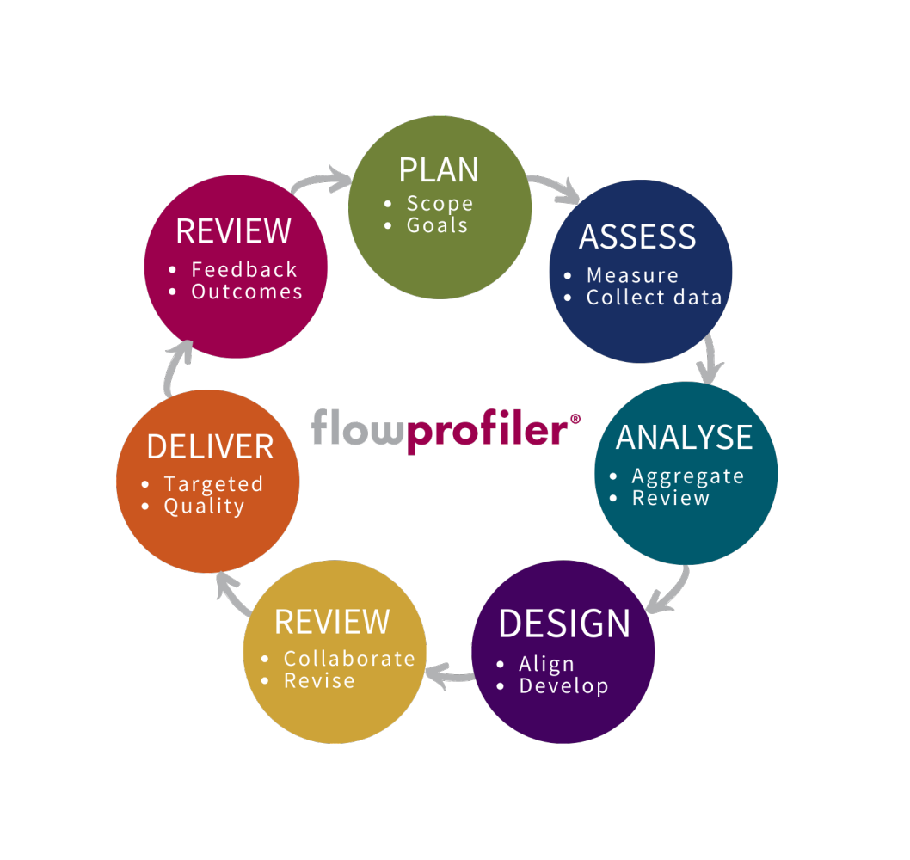

Andmepõhine tarkvaraarendus põhineb kindlatel mõõdikutel, nagu peamised jõudlusnäitajad (KPI) või eesmärgid ja võtmetulemused (OKR). Selged, objektiivsed ja üheselt mõistetavad mõõdikud julgustavad arendajate meeskondi mõtlema oma igapäevase töö pikaajalistele strateegilistele eesmärkidele ja iga projekti äriväärtusele.
Näide tööriistast: Tableau
| Head | Vead |
|---|---|
| Andmepõhiliste otsuste tuginemine | Vajab puhast andmebaasi |
| Optimeerib süsteeme ja protsesse | Liigne keskenumine andmebaasidele, kus ununeb äriloogika ära |